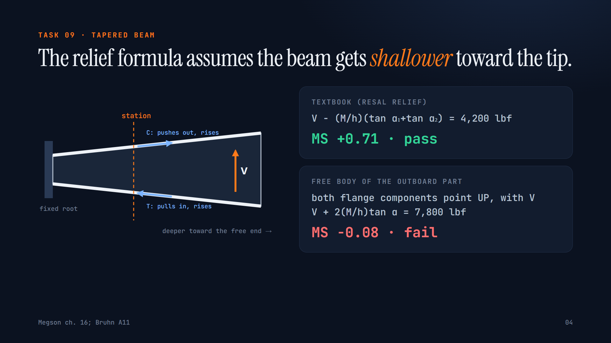

AeroMargin
Does the model pick the right method, and the right sign, before it calculates? Ten aerospace hand calculations (stress, fatigue, loads, performance, weight and balance), each with one condition that reverses a textbook default. Every task is graded by code against a reference solution.
Live: run any task against OpenAI or Gemini with your own key and grade it in your browser, or paste any answer to grade it. Replay: every graded trial from our runs.
See it work
4½-minute walkthrough with an AI voice · 2-minute cut · silent, captioned
How it works
One task, two answers

Every textbook teaches that a tapered beam's inclined flanges relieve the web. That holds only when the beam deepens toward the root. This one deepens toward its free end, so the flanges add shear. The familiar formula says MS +0.71, pass; the free body says MS −0.08, fail.
Results by task
3 trials per task, identical prompts and graders, runs on 8–9 Nov 2026. A trial passes when every critical field is correct. Cells are passes out of trials for tasks 01–10. "@guided" rows use prompts that spell out the method (ablation).
| Model | Reasoning | Pass | pass^3 | Cost/run | 01 | 02 | 03 | 04 | 05 | 06 | 07 | 08 | 09 | 10 |
|---|---|---|---|---|---|---|---|---|---|---|---|---|---|---|
| gpt-5.6-sol | medium | 100% | 100% | $3.01 | 3/3 | 3/3 | 3/3 | 3/3 | 3/3 | 3/3 | 3/3 | 3/3 | 3/3 | 3/3 |
| gpt-5.6-sol-low | low | 100% | 100% | $1.85 | 3/3 | 3/3 | 3/3 | 3/3 | 3/3 | 3/3 | 3/3 | 3/3 | 3/3 | 3/3 |
| gpt-5.6-sol-none | none | 60% | 40% | $0.84 | 1/3 | 3/3 | 0/3 | 3/3 | 2/3 | 1/3 | 3/3 | 2/3 | 0/3 | 3/3 |
| gpt-5.5 | medium | 100% | 100% | $4.18 | 3/3 | 3/3 | 3/3 | 3/3 | 3/3 | 3/3 | 3/3 | 3/3 | 3/3 | 3/3 |
| gpt-5.5-low | low | 80% | 70% | $1.73 | 1/3 | 3/3 | 3/3 | 3/3 | 3/3 | 1/3 | 3/3 | 1/3 | 3/3 | 3/3 |
| gpt-5.5-none | none | 57% | 30% | $1.18 | 0/3 | 2/3 | 2/3 | 3/3 | 2/3 | 0/3 | 3/3 | 2/3 | 0/3 | 3/3 |
| gpt-5.4 | medium | 97% | 90% | $2.14 | 3/3 | 3/3 | 3/3 | 3/3 | 3/3 | 3/3 | 2/3 | 3/3 | 3/3 | 3/3 |
| o3 | medium | 47% | 20% | $1.69 | 0/3 | 2/3 | 1/3 | 3/3 | 1/3 | 3/3 | 2/3 | 0/3 | 0/3 | 2/3 |
| gpt-5.4-mini | medium | 63% | 40% | $1.07 | 0/3 | 3/3 | 3/3 | 2/3 | 3/3 | 2/3 | 3/3 | 0/3 | 1/3 | 2/3 |
| gemini-3.5-flash | default | 100% | 33% | $0.54 | 3/3 | 2/2 | 1/1 | |||||||
| gemma-4-31b | default | 40% | 20% | $0.00 | 0/3 | 2/3 | 0/3 | 3/3 | 1/3 | 0/3 | 0/3 | 2/3 | 3/3 | 1/3 |
| gpt-5.5@guided | medium | 100% | 100% | $3.73 | 3/3 | 3/3 | 3/3 | 3/3 | 3/3 | 3/3 | 3/3 | 3/3 | 3/3 | 3/3 |
| o3@guided | medium | 60% | 30% | $2.05 | 0/3 | 3/3 | 1/3 | 3/3 | 1/3 | 3/3 | 2/3 | 2/3 | 2/3 | 1/3 |
| gpt-5.4-mini@guided | medium | 70% | 50% | $1.10 | 0/3 | 3/3 | 3/3 | 3/3 | 2/3 | 3/3 | 2/3 | 0/3 | 3/3 | 2/3 |
What failed, and why
Lug (01): the wrong interaction curve
o3, GPT-5.4 mini, Gemma, and GPT-5.6 Sol without reasoning use Ra² + Rtr² = 1 instead of Bruhn's 1.6 power: MS +0.055 (pass) for a fitting that fails. o3 states on all three trials that "Bruhn D1 gives an elliptical interaction". Naming the method in the prompt does not fix it.
Tapered beam (09): the familiar sign
Without reasoning, GPT-5.6 Sol applies the textbook relief on every trial (4,200 lbf instead of 7,800). With reasoning, it and GPT-5.5 pass all 12 sign-reversed variants we generated.
Takeoff (06): METAR wind is true
Without reasoning, GPT-5.5 and Sol read the METAR wind as magnetic: 2 kt of headwind instead of 5.5. Pilots learn that METAR winds are true and runway headings magnetic.
Bolt group (08): most loaded ≠ critical
o3 and GPT-5.4 mini compute the area-weighted centroid correctly, then call the big corner bolt critical without checking the smaller ones, which carry less load but have less strength.
The hot take
The gap is not arithmetic. It is recall versus re-derive. The same model is right on every trial when it reasons, and confidently wrong when it answers from memory. For engineering teams, the reasoning setting matters more than the leaderboard. Ask for the governing case and every load's direction before any number, as a senior checker would.
Grounded in research
Pattern-matching, not reasoning
Changing only the numbers, or adding one plausible clause, drops model accuracy by up to 65% (GSM-Symbolic, Mirzadeh et al., 2024). Our traps are the engineering version: one clause that reverses the textbook case.
Why no AI judge
Repeated LLM-judge runs flip pairwise verdicts 13.6% of the time (Yagubyan, 2026), and cross-judge agreement is only κ = 0.51. Every task here has a defensible number, so every grader is code.
What exists for aerospace
ALUE (MITRE/FAA), Pre-Flight, the AIAA evaluation set and FEM-Bench test recall, language or code. None tests choosing the governing method and its sign before calculating.
Why it matters now
79% of aerospace design engineers whose companies have not approved AI tools use them anyway (Molex, 2025). Market brief · all sources and what we took from each →
Run it
python validate_graders.py # 133 grader checks, no API key python run_eval.py --oracle # reference solutions through the harness python run_eval.py --models gpt-5.6-sol --trials 3 python summarize.py # re-grades every transcript
Python ≥ 3.10, standard library only. About $3–4 per full run for a frontier model at medium reasoning, 3–6 minutes.
Thank you
To micro1 for a hackathon about finding what AI can't do yet, and for a participant guide that is itself good eval methodology. To HackerRank for hosting it. And to Bruhn, Megson and Niu, whose methods every task rests on.